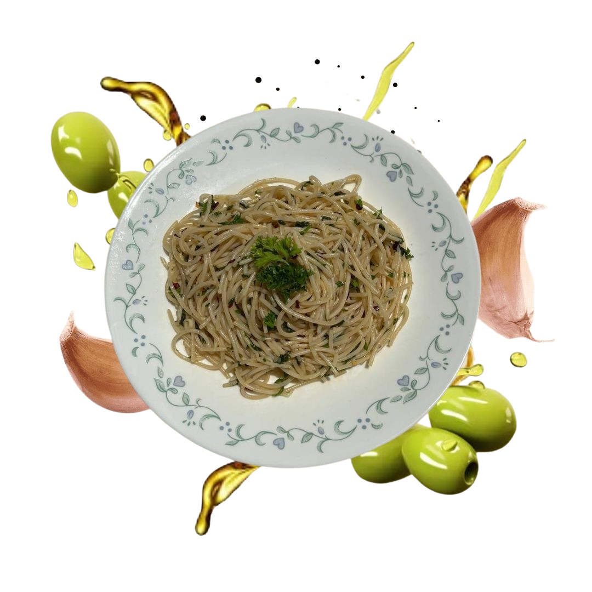

When theFlavors
Unite, TasteIgnites!

A pleasant trip through brilliant colors, rich flavors, and traditional cooking methods that honor Italy's spirit is Italian culinary inspiration. Its foundation is a dedication to using only the best, freshest ingredients, such as sun-ripened tomatoes, aromatic basil, artisanal cheeses, and premium olive oils. Every meal evokes the friendliness and warmth of Italian culture while telling a tale.
Our menu, which includes recipes that have been handed down through the years, is a celebration of true Italian heritage. Every meal is prepared with passion and reverence for ancient methods, guaranteeing a genuine flavor that takes you right to Italy. Enjoy your meal with our carefully chosen assortment of Italian wines, which are meant to complement each dish. To help you select the ideal complement to enhance your meal, our experienced staff is available.
We at Fusione di Saporibelieve Italian food is a creative canvas where classic flavors are combined with cutting-edge touches. Our Fusione di Sapori menu features a deft fusion of classic Italian fare with inventive twists that honor international influences.
Order NowWe at Fusione di Saporibelieve Italian food is a creative canvas where classic flavors are combined with cutting-edge touches. Our Fusione di Sapori menu features a deft fusion of classic Italian fare with inventive twists that honor international influences.
Order NowWe at Fusione di Saporibelieve Italian food is a creative canvas where classic flavors are combined with cutting-edge touches. Our Fusione di Sapori menu features a deft fusion of classic Italian fare with inventive twists that honor international influences.
Order NowWe at Fusione di Saporibelieve Italian food is a creative canvas where classic flavors are combined with cutting-edge touches. Our Fusione di Sapori menu features a deft fusion of classic Italian fare with inventive twists that honor international influences.
Order NowWe at Fusione di Saporibelieve Italian food is a creative canvas where classic flavors are combined with cutting-edge touches. Our Fusione di Sapori menu features a deft fusion of classic Italian fare with inventive twists that honor international influences.
Order NowWe at Fusione di Saporibelieve Italian food is a creative canvas where classic flavors are combined with cutting-edge touches. Our Fusione di Sapori menu features a deft fusion of classic Italian fare with inventive twists that honor international influences.
Order NowMasasabi kong sobrangg sarap ng matcha tiramisu nilaaa. Hindi ako mahilig sa matcha pero nung natikman ko sakanila. I LOVE IT!! OVER NAMAN SA SARAP. Pero hindi siya ganun katamis at kapait, kaya masasabi mong sobrang yummy!!
okcakes naman, masarap sya, nung natikman ko masarap kasi hindi masyadong matamis and balance lang yung matcha hindi sya ungmasyadong overpowdering.
tbh, yung carbonara nila medyo may pagka spice, pero pag nginunguya mo na, hindi mo na mararamdaman dahil mas nangingibabaw ung creamiest nung carbonara. Sobrang dami pang cheesee!!!
Masarap Affordable yung tiramisu coffee, affordable puwede sa school lalo na sa public place like sa mall ganun.